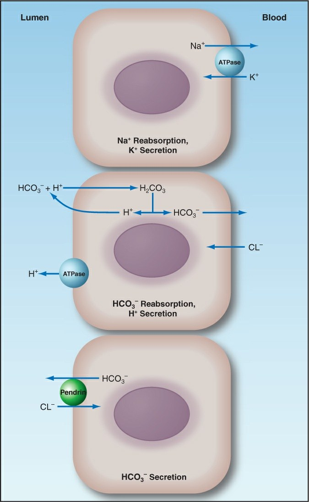

Maqueta para elegir: no es la app
M1 · Ácido-base vivo · Dirección B · Campo oscuro
El pH es un cociente
El pulmón mueve el numerador (CO₂) y el riñón, el denominador (HCO₃⁻). La compensación limita, pero no corrige.
pH calculado aquí · Ec. 31.1 y 31.2 · ficha mr-acidobase-analisis PaCO₂ y HCO₃⁻: caso
Dentro del cuerpo: alvéolo, plasma y célula del colector
ritmo ilustrativo
- H⁺
- HCO₃⁻
- Cl⁻
- cetoácidos
- CO₂
- Na⁺
- K⁺
② Plasma: 1 partícula ≈ 2 mEq/L, ilustrativo. Columnas de luz (electroneutralidad, Ec. 31.12): Na⁺, Cl⁻ y HCO₃⁻ caso; los no medidos, Tabla 31.2 · ficha mr-acidobase-gaps: albúmina 15, otros aniones 8 (orgánicos 5, fosfato 2, sulfato 1), cationes 11 (Ca 5, K 4,5, Mg 1,5). Lo no medido es oscuro: el hiato es la franja oscura y los cetoácidos la encienden. La reacción H⁺ + HCO₃⁻ → CO₂ + H₂O fisiología general. Células de la Fig. 33.1 ficha mr-alcalosis-mecanismos.
El mapa de la gasometría
Paso 0 · Normal
Reloj: el pulmón compensa en 30-120 min; el riñón, en 2-3 días ficha mr-acidobase-analisis. Dónde cae cada paso: antes del trastorno.
Albúmina: el hiato escondido
Actúa sobre el paso 2. Cada g/dL que falta quita unos 2,5 mEq/L de aniones no medidos Ec. 31.15 · ficha mr-acidobase-gaps: el hiato medido baja aunque los cetoácidos sigan ahí.
- Hiato medido
- 24 la Ec. 31.15 al revés; el Cl⁻ ocupa el sitio, ilustrativo
- Hiato corregido
- 24 = medido + 2,5 × (4,5 − albúmina) Ec. 31.15
- Ejemplo de la ficha
- HA 10 con albúmina 2 → HAc 16 mr-acidobase-gaps
Con la albúmina normal, lo que ves es lo que hay.
🧪 Hiato osmolal: la sal que el cálculo no ve
- Calculada = 2 × Na + glucosa/18 + BUN/2,8 = 2 × 140 + 90/18 + 14/2,8 = 290 mOsm/kg H₂O Ec. 31.17 · ficha mr-acidobase-gaps
- Medida: 320 caso → hiato osmolal = 30; lo normal, <10 mr-acidobase-gaps
- Un soluto que no está en la fórmula sube la medida, pero no la calculada: piensa en metanol o etilenglicol (hiatos aniónico y osmolal altos) ficha mt-alcoholes
📝 Notas de fidelidad
Qué ecuación da el pH. La página usa la Ec. 31.2 de la ficha, [H⁺] = 24 × PaCO₂ / HCO₃⁻, y pH = −log [H⁺] (Ec. 31.1). Con esa forma salen los pH de la tabla del caso (7,40 · 7,10 · 7,28 · 7,38 · 7,51). Con la de Henderson-Hasselbalch (pK 6,1, ficha mr-lactato-bicarbonato; solubilidad del CO₂ 0,03, fisiología general) el paso 2 y el 3 darían 7,29 y el 4, 7,52: el 24 de la Ec. 31.2 es un redondeo de 0,03 × 10^(9 − 6,1) ≈ 23,8.
Los ejemplos del capítulo 31 no cumplen la Ec. 31.2 (comprobado en el PDF del capítulo; la ficha los copia sin nota):
- pH 7,28 con PaCO₂ 23 y HCO₃⁻ 14 → 24 × 23 / 14 = 39 nEq/L → pH 7,40.
- PaCO₂ 26, pH 7,50 y HCO₃⁻ 14 → 24 × 26 / 14 = 45 nEq/L → pH 7,35.
Por eso el caso usa gasometrías coherentes con la ecuación.
Albúmina: dos cifras de la misma ficha. La Tabla 31.2 da 15 mEq/L de albúmina y la Ec. 31.15, unos 2,5 mEq por gramo (con 4,5 g/dL serían 11,25). La columna dibuja el bloque de 15 y le resta 2,5 por cada g/dL que falta.
Paso 5 sin cifras finales: la ficha da el déficit de cloro y el ritmo, no la curva de bajada del HCO₃⁻. El movimiento es una tendencia ilustrativo.
Ritmo de la respiración: Marino da la PaCO₂ esperada, no la ventilación minuto que la produce ilustrativo.
🔬 Las tres células del colector en el libro (Fig. 33.1)

¿Qué dirección quieres para el ácido-base vivo?
¿Y el riñón?
La elección no se guarda: díselo al director en el chat.